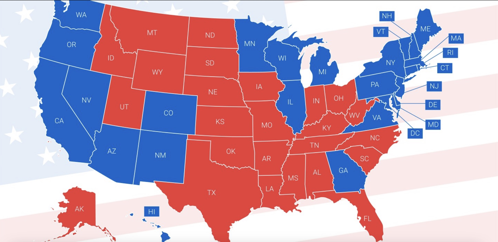
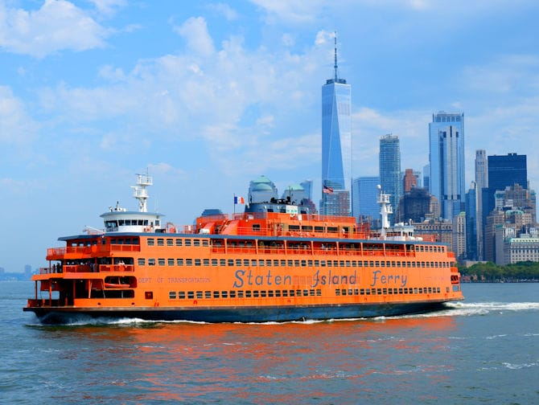
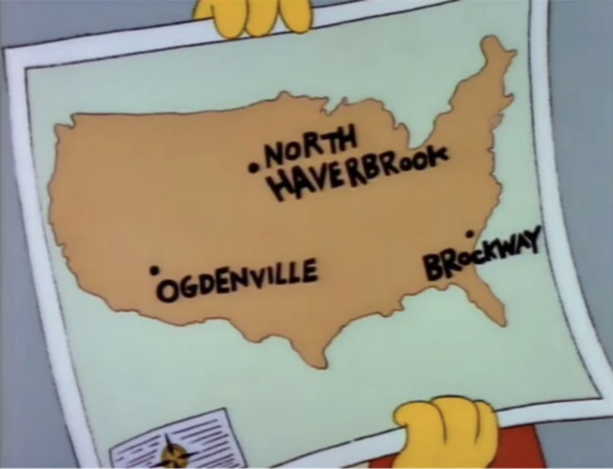

Jason Amey Mini Project 01
Fiscal Characteristics of Major US Public Transit Systems
Public transit in the United States serves a critical role in urban mobility. US transit serves millions of commuters while reducing congestion, pollution, and reliance on personal vehicles.
The fiscal efficiency of these systems varies widely. However understanding these financial dimensions is essential for evaluating the sustainability and performance of transit services in a variety of cities and regions.
This report explores data from major U.S. public transit systems, with analyis focused on factors such as: fare revenue per mile, vehicle revenue miles (VRM), unlinked passenger trips (UPT), and the ratio of expenses to farebox recovery.
This data provide insights into which systems operate most efficiently, which modes of transport generate the most revenue, and how these metrics differ across various regions in the United States.
Using tools from the R programming language, we explore these trends over time and the influence of population density, geography, and mode type on financial outcomes. Through this exploration, we hope to better understand the complex relationship between transit usage, financial sustainability, and regional transit characteristics.
Data Creation :
if(!require("tidyverse")) install.packages("tidyverse")
library(tidyverse)
if(!require("DT")) install.packages("DT")
library(DT)
if(!require("stringr")) install.packages("stringr")
library(stringr)
if(!require("lubridate")) install.packages("lubridate")
library(lubridate)
FARES <- readxl::read_xlsx("data/mp-01/2022_fare_revenue.xlsx") |>
select(-`State/Parent NTD ID`,
-`Reporter Type`,
-`Reporting Module`,
-`TOS`,
-`Passenger Paid Fares`,
-`Organization Paid Fares`) |>
filter(`Expense Type` == "Funds Earned During Period") |>
select(-`Expense Type`)
EXPENSES <- readr::read_csv("data/mp-01/2022_expenses.csv") |>
select(`NTD ID`,
`Agency`,
`Total`,
`Mode`) |>
mutate(`NTD ID` = as.integer(`NTD ID`)) |>
rename(Expenses = Total) |>
group_by(`NTD ID`, `Mode`) |>
summarize(Expenses = sum(Expenses)) |>
ungroup()
TRIPS <- readxl::read_xlsx("data/mp-01/2022_ridership.xlsx", sheet="UPT") |>
filter(`Mode/Type of Service Status` == "Active") |>
select(-`Legacy NTD ID`,
-`Reporter Type`,
-`Mode/Type of Service Status`,
-`UACE CD`,
-`TOS`) |>
pivot_longer(-c(`NTD ID`:`3 Mode`),
names_to="month",
values_to="UPT") |>
drop_na() |>
mutate(month=my(month)) # Parse _m_onth _y_ear date specs
MILES <- readxl::read_xlsx("data/mp-01/2022_ridership.xlsx", sheet="VRM") |>
filter(`Mode/Type of Service Status` == "Active") |>
select(-`Legacy NTD ID`,
-`Reporter Type`,
-`Mode/Type of Service Status`,
-`UACE CD`,
-`TOS`) |>
pivot_longer(-c(`NTD ID`:`3 Mode`),
names_to="month",
values_to="VRM") |>
drop_na() |>
group_by(`NTD ID`, `Agency`, `UZA Name`,
`Mode`, `3 Mode`, month) |>
summarize(VRM = sum(VRM)) |>
ungroup() |>
mutate(month=my(month)) # Parse _m_onth _y_ear date specs
USAGE <- inner_join(TRIPS, MILES) |>
mutate(`NTD ID` = as.integer(`NTD ID`))
FINANCIALS <- inner_join(FARES, EXPENSES, join_by(`NTD ID`, `Mode`))
FINANCIALS <- FINANCIALS |>
rename(
"mode" = "Mode"
)
FINANCIALS <- FINANCIALS |>
mutate(mode=case_when(
mode == "HR" ~ "Heavy Rail",
mode == "DR" ~ "Demand Response",
mode == "FB" ~ "Ferry Boat",
mode == "MB" ~ "Motor Bus",
mode == "SR" ~ "Streetcar",
mode == "TB" ~ "Trolleybus",
mode == "VP" ~ "Vanpool",
mode == "CB" ~ "Commuter Bus",
mode == "RB" ~ "Bus Rapid Transit",
mode == "LR" ~ "Light Rail",
mode == "YR" ~ "Hybrid Rail",
mode == "MG" ~ "Guided Transit (Monorail)",
mode == "CR" ~ "Commuter Rail",
mode == "AR" ~ "Alaska Railroad",
mode == "TR" ~ "Tramway",
mode == "HR" ~ "Heavy Rail",
mode == "IP" ~ "Inclined Plane",
mode == "PB" ~ "Publico",
mode == "CC" ~ "Cable Car",
TRUE ~ "Unknown"))TASK 1 - Creating Syntactic Names
Renaming column UZA Name to metro_area:
USAGE <- USAGE |>
rename("metro_area" = "UZA Name",
"unlinked_passenge_trips" = "UPT",
"vehicle_revenue_miles" = "VRM",
"agency" = "Agency",
"mode" = "Mode"
) |>
select(-"3 Mode")output:
| NTD ID | agency | metro_area | mode | month | unlinked_passenger_trips | vehicle_revenue_miles |
|---|---|---|---|---|---|---|
| 1 | King County | Seattle–Tacoma, WA | DR | 2002-01-01 | 135,144 | 746,158 |
| 1 | King County | Seattle–Tacoma, WA | DR | 2002-02-01 | 127,378 | 656,324 |
| 1 | King County | Seattle–Tacoma, WA | DR | 2002-03-01 | 136,030 | 726,578 |
| 1 | King County | Seattle–Tacoma, WA | DR | 2002-04-01 | 142,204 | 736,975 |
| 1 | King County | Seattle–Tacoma, WA | DR | 2002-05-01 | 144,697 | 746,158 |
| 1 | King County | Seattle–Tacoma, WA | DR | 2002-06-01 | 131,833 | 696,633 |
TASK 2 - Recoding the Mode Column
Expanding DOT mode codes into their full definitions All of the code definitions are found here: National Transit Database NTD Glossary
USAGE <- USAGE |>
mutate(mode=case_when(
mode == "HR" ~ "Heavy Rail",
mode == "DR" ~ "Demand Response",
mode == "FB" ~ "Ferry Boat",
mode == "MB" ~ "Motor Bus",
mode == "SR" ~ "Streetcar",
mode == "TB" ~ "Trolleybus",
mode == "VP" ~ "Vanpool",
mode == "CB" ~ "Commuter Bus",
mode == "RB" ~ "Bus Rapid Transit",
mode == "LR" ~ "Light Rail",
mode == "YR" ~ "Hybrid Rail",
mode == "MG" ~ "Guided Transit (Monorail)",
mode == "CR" ~ "Commuter Rail",
mode == "AR" ~ "Alaska Railroad",
mode == "TR" ~ "Tramway",
mode == "IP" ~ "Inclined Plane",
mode == "PB" ~ "Publico",
mode == "CC" ~ "Cable Car",
TRUE ~ "Unknown"))
sample_n(USAGE, 20) |>
select(agency, metro_area, mode)output:
| agency | metro_area | mode |
|---|---|---|
| Birmingham-Jefferson County Transit Authority | Birmingham, AL | Motor Bus |
| Yolo County Transportation District | Sacramento, CA | Motor Bus |
| Michiana Area Council of Governments | Elkhart, IN–MI | Motor Bus |
| Lower Rio Grande Valley Development Council | McAllen, TX | Demand Response |
| Potomac and Rappahannock Transportation Commission | Washington–Arlington, DC–VA–MD | Demand Response |
| Greater Richmond Transit Company | Richmond, VA | Vanpool |
| Stanislaus Regional Transit Authority | Modesto, CA | Demand Response |
| Worcester Regional Transit Authority | Worcester, MA–CT | Demand Response |
| Chattanooga Area Regional Transportation Authority | Chattanooga, TN–GA | Motor Bus |
| Knoxville-Knox County Community Action Committee | Knoxville, TN | Demand Response |
| Pinellas Suncoast Transit Authority | Tampa–St. Petersburg, FL | Bus Rapid Transit |
| Laketran | Cleveland, OH | Commuter Bus |
| METRO Regional Transit Authority | Akron, OH | Motor Bus |
| Regional Transportation Commission of Washoe County | Reno, NV–CA | Demand Response |
| Kanawha Valley Regional Transportation Authority | Charleston, WV | Motor Bus |
| Maryland Transit Administration | Baltimore, MD | Light Rail |
| Transit Joint Powers Authority for Merced County | Merced, CA | Demand Response |
| Broward County Board of County Commissioners | Miami–Fort Lauderdale, FL | Motor Bus |
| Regional Transportation Program, Inc. | Portland, ME | Demand Response |
| Central Midlands Regional Transportation Authority | Columbia, SC | Commuter Bus |
TASK 3 - Answering Instructor Specified Questions with dplyr
Using functions we have studied in class, including filter, group_by, summarize, arrange, answer the following questions in your analysis:
Question 1
What transit agency had the most total VRM in this sample?
USAGE |>
filter(!is.na(agency)) |>
group_by(agency) |>
summarize(total = sum(vehicle_revenue_miles)) |>
arrange(desc(total))output:
| agency | total |
|---|---|
| MTA New York City Transit | 10,832,855,350 |
| New Jersey Transit Corporation | 5,645,525,525 |
| Los Angeles County Metropolitan Transportation Authority | 4,354,016,659 |
| Washington Metropolitan Area Transit Authority | 2,821,950,701 |
| Chicago Transit Authority | 2,806,202,144 |
Answer 1
MTA New York City Transit: 10,832,855,350 Vehicle Revenue Miles
Note:
New York City is the largest city in the United States and the “big city” with the highest percentage of its residents using mass transit. These findings are in line with the signature characteristics of NYC’s transportation demographics.
Question 2:
What transit mode had the most total VRM in this sample?
USAGE |>
filter(!is.na(mode)) |>
group_by(mode) |>
summarize(total_vrm = sum(vehicle_revenue_miles, na.rm = TRUE)) |>
arrange(desc(total_vrm))output:
| mode | total_vrm |
|---|---|
| Motor Bus | 49,444,494,088 |
| Demand Response | 17,955,073,508 |
| Heavy Rail | 14,620,362,107 |
| Commuter Rail | 6,970,644,241 |
| Vanpool | 3,015,783,362 |
Answer 2
Motor Bus: 49,444,494,088 Vehicle Revenue Miles
Note:
Outside a few major eastern US cities, much of the United States transportation infrastructure is meant to serve motorized vehicles. It is logical then that the motor bus would far outnumber the miles traveled by rail and other forms of transit.
Question 3
How many trips were taken on the NYC Subway (Heavy Rail) in May 2024?
USAGE |>
filter(
month =="2004-05-01" &
mode == "Heavy Rail" &
agency == "MTA New York City Transit"
) |>
select(agency, mode, month, unlinked_passenge_trips)output:
| agency | mode | month | unlinked_passenger_trips |
|---|---|---|---|
| MTA New York City Transit | Heavy Rail | 2004-05-01 | 184,334,430 |
Answer 3
184,334,430 trips
If you divide this figure by 30 (days in a month), and then divide that result by 8,300,000 (population of NYC), the average New Yorker takes .7402 subway rides a day.
Question 4
What mode of transport had the longest average trip in May 2024?
Question 5
How much did NYC subway ridership fall between April 2019 and April 2020?
subway_ridership <- USAGE |>
filter(
agency == 'MTA New York City Transit' &
mode == "Heavy Rail" &
(month == "2019-05-01" | month == "2020-05-01")
)
subway_ridership_2019 <- subway_ridership[1,]$unlinked_passenge_trips
subway_ridership_2020 <- subway_ridership[2,]$unlinked_passenge_trips
subway_ridership_2019 - subway_ridership_2020# [1] 210561702Answer 5:
184,334,430
Note:
Covid sucked.
Three (four) more interesting transit facts in this data
FACT 1
In Pittsburgh, PA there is a unique form of uphill rail transit called the Duquesne Incline. It offers arguably the most scenic view of Downtown Pittsburgh and the convergence of the city’s “Three Rivers.” Do tourists largely ride the Duquesne Incline? :
from Wikipedia:
The incline was intended to carry cargo up and down Mt. Washington in the late 19th century. It later carried passengers, particularly Mt. Washington residents who were tired of walking up the steep footpaths to the top of the bluff. Inclines were being built all over Mt. Washington to serve working-class people who were forced out of the lowlying riverfront by industrial development
I was interested to see if the ridership numbers suggested any traditional transit usage, or if the incline was now primarily used for “transit tourism”.
month_map <- c(
"01" = "January",
"02" = "February",
"03" = "March",
"04" = "April",
"05" = "May",
"06" = "June",
"07" = "July",
"08" = "August",
"09" = "September",
"10" = "October",
"11" = "November",
"12" = "December"
)
USAGE |>
filter(startsWith(agency, "Pitt")) |>
filter(mode == "Inclined Plane") |>
mutate(month_split = strsplit(as.character(month), "-")) |>
mutate(month_num = sapply(month_split, function(x) x[2])) |>
mutate(month_name = month_map[month_num]) |>
group_by(month_name) |>
summarize(total_this_month = sum(unlinked_passenge_trips)) |>
arrange(desc(total_this_month))output:
| month_name | total_this_month |
|---|---|
| July | 1,715,940 |
| August | 1,507,425 |
| June | 1,424,861 |
| May | 1,224,003 |
| September | 1,128,166 |
| October | 1,061,274 |
| April | 1,032,881 |
| November | 965,257 |
| March | 895,805 |
| December | 877,248 |
| January | 666,924 |
| February | 641,834 |
Conclusion
The ridership numbers spiking in the summer, along with stark drop off in ridership from December to January, suggest the incline is largely popular with tourists and not used as much by the hill-weary residents of Mt. Washington.
FACT 2

As our country remains polarized on so many issues and cultural concern, I was curious if there was an obvious Red vs. Blue divide over transit usage in this country.
I wanted to see if I could identify any obvious distinctions or division in the use of transit between Red States and Blue States.
USAGE |>
#there is def some code smell here :
mutate(state_split = strsplit(metro_area, ", ")) |>
mutate(state = sapply(state_split, function(st) st[2])) |>
mutate(state_split = strsplit(state, "-")) |>
mutate(state = sapply(state_split, function(st) st[1])) |>
group_by(state) |>
summarize(total_trips = sum(unlinked_passenge_trips)) |>
arrange(desc(total_trips)) |>
print(n = 20)output:
| state | total_trips |
|---|---|
| NY | 85,530,025,008 |
| CA | 27,099,834,336 |
| IL | 12,744,773,889 |
| DC | 9,057,818,580 |
| PA | 8,776,976,555 |
| MA | 7,993,427,892 |
| FL | 5,742,223,542 |
| TX | 5,466,164,685 |
| WA | 4,524,992,934 |
| GA | 3,096,203,662 |
| OR | 2,555,837,796 |
| OH | 2,364,107,111 |
| MD | 2,271,510,025 |
| CO | 2,144,454,426 |
| MN | 1,909,216,918 |
| MI | 1,776,345,495 |
| NV | 1,395,503,197 |
| AZ | 1,384,679,690 |
| MO | 1,371,031,013 |
| HI | 1,225,521,578 |
Conclusion
There does in fact look to be a Red vs. Blue divide over transit usage in this country. While this list is indeed dominated by many Blue States, I believe the most convincing evidence for this fact are state rankings #7 - #11.
Both Florida, Texas and Georgia - all Red States - are among the largest states by population in the United States.
- Florida Population: 22.4 million
- Texas Population: 30.03 million
- Georgia Population: 10.9 million
However, Oregon and Washingon are neighbors to those 3 large Red states in this ranking of transit use.
Yet Oregon and Washington - both Blue States - are medium-sized states in terms of population counts.
- Washington Population 7.786 million
- Oregon Population 4.2 million
That Oregon and Washinton maintain comparable volumes of transit usage, despite significantly lower populations than large Red States like Florida, Texas and Georgia, suggest there is a Red v. Blue divide over transit usage in the United States.
A better exercise would be to measure transit trips / population to see the per capita number for ridership.
FACT 3

This is interesting :
USAGE |>
group_by(agency) |>
summarize(total_trips = sum(unlinked_passenge_trips),
total_miles = sum(vehicle_revenue_miles),
num_ppl_mile = total_trips / total_miles
) |>
arrange(desc(total_trips)) |>
slice(1:50) |>
arrange(desc(average_trip)) |>
print(n = 50)output:
| agency | total_trips | total_miles | num_ppl_mile |
|---|---|---|---|
| New York City Department of Transportation | 440,538,576 | 4,150,573 | 106 |
| Washington State Ferries | 502,394,973 | 20,230,767 | 24.8 |
| City and County of San Francisco | 4,533,445,698 | 583,200,690 | 7.77 |
Conclusion
This looks to be communicating that Ferries are very efficient vehicles for transporting a lot of people over small distances. Every SI Ferry carries around ~4,000 people !
FACT 4

This charismatic, tune-carrying charlatan has swindled unknowing cities like Ogdenville, North Haverbrook and Brockway into buying dubious monorail systems for their communities.
I was interested to see where this snake-oil salesman - with a voice of gold! - has worked his sly sales magic across the United States…
USAGE |>
filter(mode == "Guided Transit (Monorail)") |>
group_by(metro_area) |>
summarize(count = n())output:
| metro_area | count |
|---|---|
| Detroit, MI | 151 |
| Jacksonville, FL | 151 |
| Las Vegas–Henderson–Paradise, NV | 34 |
| Miami–Fort Lauderdale, FL | 151 |
| Morgantown, WV | 145 |
| San Francisco–Oakland, CA | 116 |
| Seattle–Tacoma, WA | 151 |
Conclusion
Detroit, MI, Morgantown, WV and Jacksonville, FL are a few of the US cities where brain-dead slobs work cushy jobs on this very unique, very rare form of mass transit.
Task 5: Table Summarization
Create a new table from USAGE that has annual total (sum) UPT and VRM for 2022. This will require use of the group_by, summarize, and filter functions. You will also want to use the year function, to extract a year from the month column.
USAGE_2022_ANNUAL <- USAGE |>
mutate(year = year(month)) |>
filter(year(month) == 2022) |>
group_by(year, metro_area, agency, mode, `NTD ID`) |>
summarize(total_upt = sum(unlinked_passenge_trips, na.rm = TRUE),
total_vrm = sum(vehicle_revenue_miles, na.rm = TRUE)) |>
select(`NTD ID`, agency, metro_area, mode, total_upt, total_vrm, year) |>
filter(total_upt > 400000) |>
ungroup()
USAGE_AND_FINANCIALS <- left_join(USAGE_2022_ANNUAL,
FINANCIALS,
join_by(`NTD ID`, mode)) |>
rename(
"total_fares" = "Total Fares",
"expenses" = "Expenses",
) |>
select(-"Agency Name") |>
drop_na() |>
print(USAGE_AND_FINANCIALS, n = 5)output:
| NTD ID | agency | metro_area | mode | total_upt | total_vrm | year | total_fares | expenses |
|---|---|---|---|---|---|---|---|---|
| 50010 | METRO Regional Transit Authority | Akron, OH | Motor Bus | 3,470,765 | 3,252,489 | 2022 | 2,345,779 | 38,200,740 |
| 50021 | Portage Area Regional Transportation Authority | Akron, OH | Motor Bus | 591,881 | 672,463 | 2022 | 1,933,660 | 6,197,595 |
| 20002 | Capital District Transportation Authority | Albany–Schenectady, NY | Motor Bus | 12,656,760 | 8,723,783 | 2022 | 7,947,384 | 95,586,715 |
| 60019 | City of Albuquerque | Albuquerque, NM | Bus Rapid Transit | 1,829,848 | 792,000 | 2022 | 38,268 | 6,535,431 |
| 60019 | City of Albuquerque | Albuquerque, NM | Motor Bus | 4,151,408 | 3,788,377 | 2022 | 738,682 | 40,436,564 |
Task 6: Farebox Recovery Among Major Systems
Question 1
Which transit system (agency and mode) had the most UPT in 2022?
USAGE_AND_FINANCIALS |>
arrange(desc(total_upt)) |>
select(agency, mode, total_upt)output:
| agency | mode | total_upt |
|---|---|---|
| MTA New York City Transit | Heavy Rail | 1,793,073,801 |
| MTA New York City Transit | Motor Bus | 458,602,305 |
| Los Angeles County Metropolitan Transportation Authority | Motor Bus | 193,637,448 |
| Los Angeles County Metropolitan Transportation Authority | Motor Bus | 193,637,448 |
| Chicago Transit Authority | Motor Bus | 140,013,945 |
Answer 1:
MTA New York City Transit Heavy Rail: 1,793,073,801
Note:
While New York City’s inclusion on this list is understandable, along with Chicago: the 3rd largest city in the United States, seen as an historical pre-war, pre-automobile city… the inclusion of Los Angeles County is arguably surprising.
While LA County is of significant population size, it is considered a “sprawled out” metro area most friendly to the automobile. Despite this reputation, and despite the challenges of offering transit in a region with lower population density, LA county’s high transit ridership suggests the existence of an undeniable appetite for quality transit.
Question 2:
Which transit system (agency and mode) had the highest farebox recovery, defined as the highest ratio of Total Fares to Expenses?
USAGE_AND_FINANCIALS |>
mutate(farebox_recovery = total_fares / expenses ) |>
arrange(desc(farebox_recovery)) |>
select(agency, mode, farebox_recovery) |>
print(n = 5)output:
| agency | mode | farebox_recovery |
|---|---|---|
| Port Imperial Ferry Corporation | Ferry Boat | 1.43 |
| Hyannis Harbor Tours, Inc. | Ferry Boat | 1.41 |
| Trans-Bridge Lines, Inc. | Commuter Bus | 1.33 |
| Chattanooga Area Regional Transportation Authority | Inclined Plane | 1.31 |
| Regional Transportation Commission of Washoe County | Vanpool | 1.24 |
Answer 2:
Port Imperial Ferry Corporation, Ferry Boat: 1.43
Note:
Port Imperial Ferry, Haynnis Harbor Tours and Trans-Bridge Lines are all private companies. As private companies, their fares must exceed their expenses as their operations are not supported by any government entity. Furthermore, business owners expect profit on their capital investment and assumption of risk. This is consistent with an observation of fares outpacing revenue.
Question 3:
Which transit system (agency and mode) has the lowest expenses per UPT?
USAGE_AND_FINANCIALS |>
mutate(expenses_UPT = expenses / total_upt ) |>
arrange(expenses_UPT) |>
select(agency, mode, expenses_UPT)output:
| agency | mode | expenses_UPT |
|---|---|---|
| North Carolina State University | Motor Bus | 1.18 |
| Anaheim Transportation Network | Motor Bus | 1.28 |
| University of Iowa | Motor Bus | 1.54 |
| Chatham Area Transit Authority | Ferry Boat | 1.60 |
| Texas State University | Motor Bus | 2.05 |
Answer 3:
North Carolina State University, Motor Bus : 1.18 $/ride
Note:
It’s logical that the transit systems with the lowest expense per ride serve universities. College campuses are communities with two factors suited for offering affordable, cost-sensitive transit: a high population density (students are mostly in dorms and shared housing) and a smaller surface for transit coverage (the routes are limited to a college campus, not an entire city).
Question 4:
Which transit system (agency and mode) has the highest total fares per UPT?
USAGE_AND_FINANCIALS |>
mutate(fares_UPT = total_fares / total_upt ) |>
arrange(desc(fares_UPT)) |>
select(agency, mode, fares_UPT)output:
| agency | mode | fares_UPT |
|---|---|---|
| Hampton Jitney, Inc. | Commuter Bus | 41.3 |
| Pennsylvania Department of Transportation | Commuter Rail | 32.3 |
| Hyannis Harbor Tours, Inc. | Ferry Boat | 29.6 |
| Trans-Bridge Lines, Inc. | Commuter Bus | 28.1 |
| SeaStreak, LLC | Ferry Boat | 22.1 |
Answer 4
Hampton Jitney: 41.3 $/trip
Note:
The Hampton Jitney is a logical candidate to collect the highest fares for every ride (i.e. its riders pay the most) because it is responsible for transporting some the wealthiest residents of New York City to some of the most desirable vacationing in the United States - the famed beach community “The Hamptons.” If you can charge wealthy customers more for a service they can afford, as a business person, why wouldn’t you? What’s more, the Hampton Jitney vehicles are outfitted with amenities to comfort the wealthy riders who use the service. Seemingly the higher fares are not only going to transportation expenses, but also on-bus goodies used to appeal to a luxury audience.
Question 5
Which transit system (agency and mode) has the lowest expenses per VRM?
USAGE_AND_FINANCIALS |>
mutate(expenses_VRM = expenses / total_vrm ) |>
arrange(expenses_VRM) |>
select(agency, mode, expenses_VRM)output:
| agency | mode | expenses_VRM |
|---|---|---|
| Metropolitan Transportation Commission | Vanpool | 0.445 |
| San Joaquin Council | Vanpool | 0.498 |
| San Diego Association of Governments | Vanpool | 0.540 |
| Regional Transportation Commission of Washoe County | Vanpool | 0.566 |
| Los Angeles County Metropolitan Transportation Authority | Vanpool | 0.581 |
Answer 5
Metropolitan Transportation Commission : 0.445 $/mile
Note:
Vanpool’s efficiency stems from 1. it being easier to run a smaller van at capacity than a larger bus and 2. it being subsidized by non-road users. The highway trust fund has long been running a deficit as gas tax revenues have not kept up with the cost of highway construction and maintenance. Because vanpool can run its vehicles consistently at full capacity, and can use infrastructure that is not fully supported by road user fees, it suggests an efficient form of transit.
Question :
Which transit system (agency and mode) has the highest total fares per VRM?
USAGE_AND_FINANCIALS |>
mutate(fares_VRM = total_fares / total_vrm ) |>
arrange(desc(fares_VRM)) |>
select(agency, mode, fares_VRM)output:
| agency | mode | fares_VRM |
|---|---|---|
| Jacksonville Transportation Authority | Ferry Boat | 158.0 |
| Chattanooga Area Regional Transportation Authority | Inclined Plane | 149.0 |
| Hyannis Harbor Tours, Inc. | Ferry Boat | 138.0 |
| SeaStreak, LLC | Ferry Boat | 115.0 |
| Cape May Lewes Ferry | Ferry Boat | 93.0 |
Answer 6
Jacksonville Transportation Authority : 158.0 $/mile
Note:
Ferries are often necessary, not because a rider needs to travel long distances, but because a body of water is serving as an insurmountable transportation barrier.
Ferries are expensive. Here in NYC, ferries operate at 10X the subsidy as a subway ride. Presumably the higher fares collected by these transit agencies are needed to cover the ferry boat’s higher expenses. With the combination of a larger numerator (the ferry fares) and a smaller denominator (miles traveled) we can understand the results found here.
Based on all of this, what do you believe to be the most efficient transit system in the country? (Your answer may differ depending on which form of ‘efficiency’ you care most about)
Transit use is an unmistakable social, ecological and economical good. It enhances opportunity, reduces pollution and generates wealth through efficient land use.
As such, I believe the transit agency and mode that provides the most trips is the most efficient system: